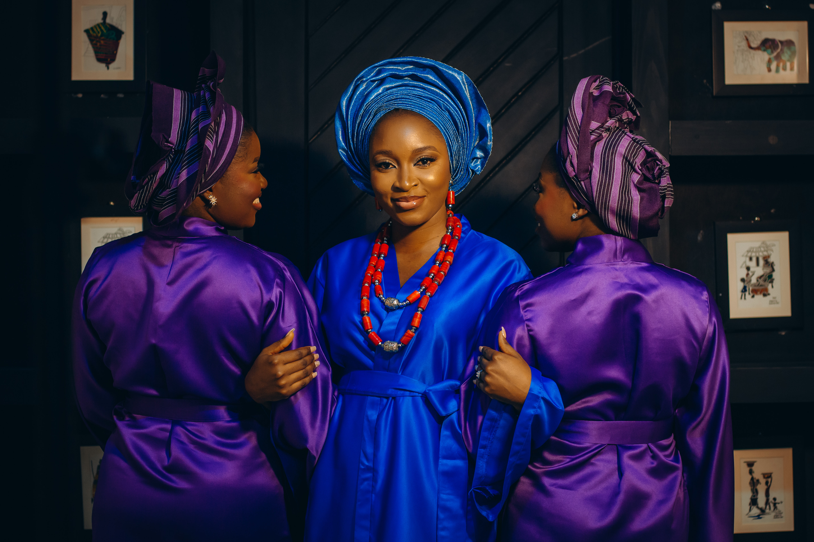
[ 4K CINEMATOGRAPHY & VISUAL STORIES ]
STORIES IN MOTION.
MOMENTS IN FOCUS.
“Every frame holds a story. My job is to find it, capture it, and make it unforgettable.”
[ ARCHIVE // 01 ]
Selected Film Works
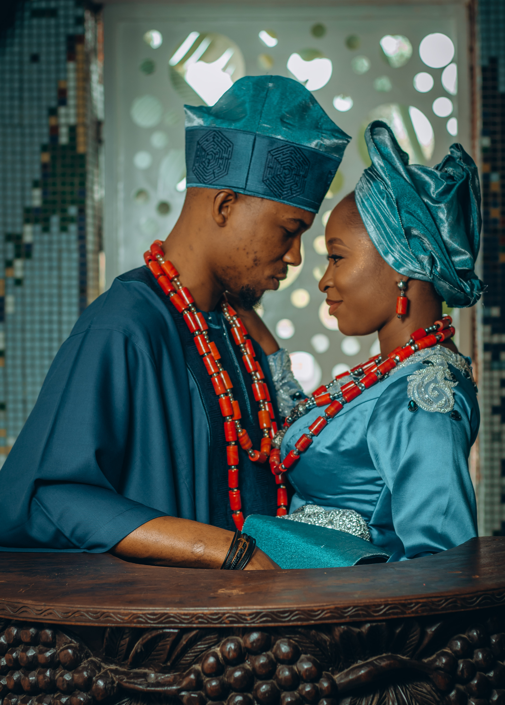
Francisca & Anthony
Cinematic Wedding StoryAxon Socials
Branded Campaign & Digital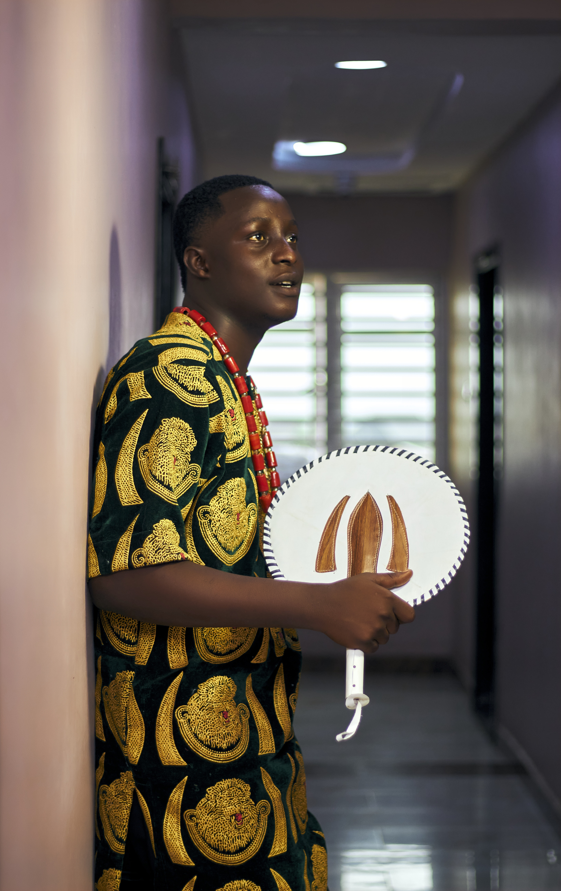
D_Champs Fit
Athletic & Motion Film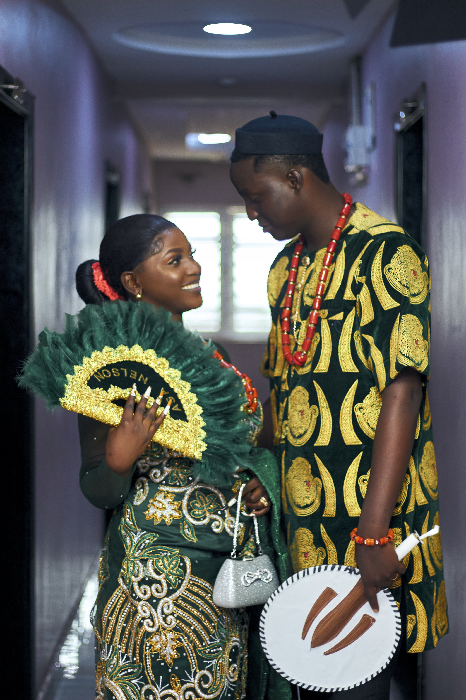
Hope & Francis
Wedding Milestone Celebration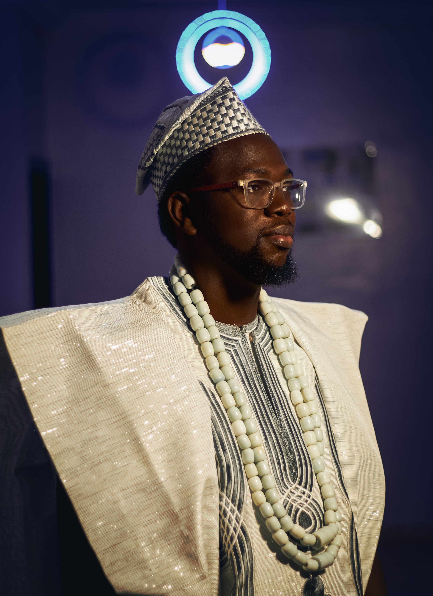
The Ride Master
Documentary & Narrative Story
[01]
Polo Club
Commercial & Luxury
Canada
2026
Play Film →
[02]
Francisca & Anthony
Wedding Feature
Canada
2026
Play Film →
[03]
Axon Socials
Branded Social
Canada
2025
Play Film →
[04]
D_Champs Fit
Athletic & Motion
Canada
2025
Play Film →
[05]
Hope & Francis
Wedding Ceremony
Canada
2025
Play Film →
[06]
The Ride Master
Documentary Short
Canada
2024
Play Film →
[ ARCHIVE // 02 ]
Moments in Focus (Photography)
Editorial • Convocations • Portraits • Celebrations
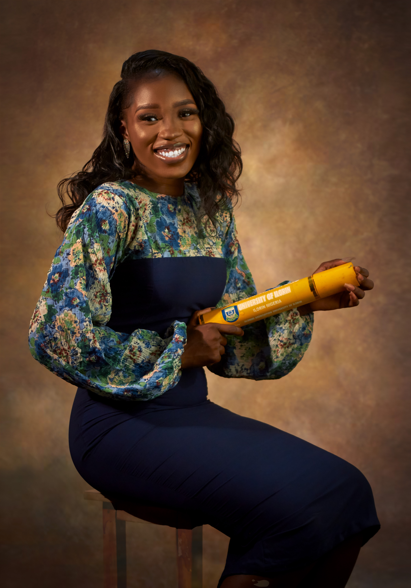
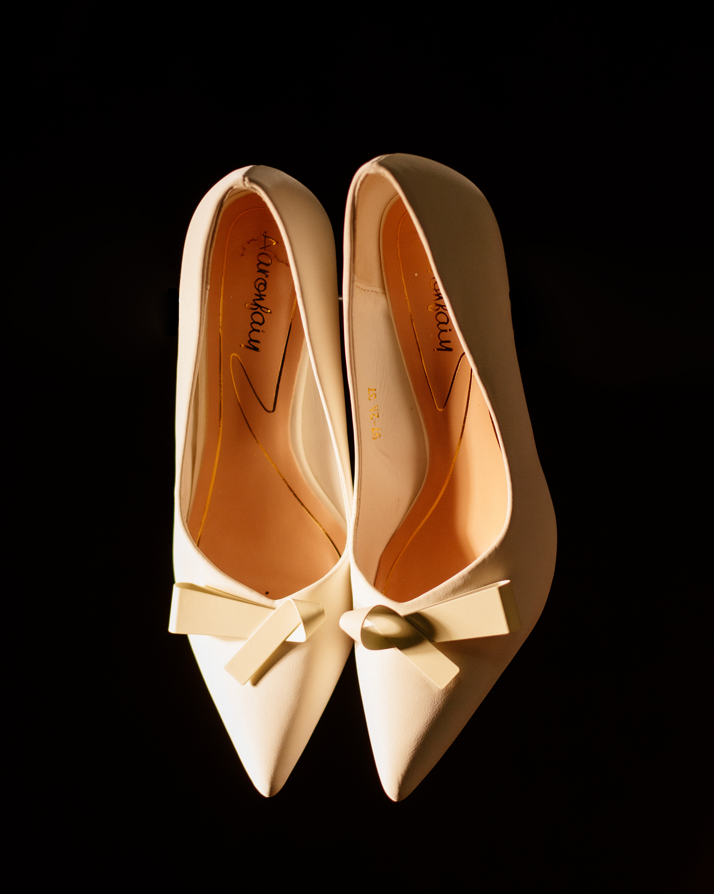
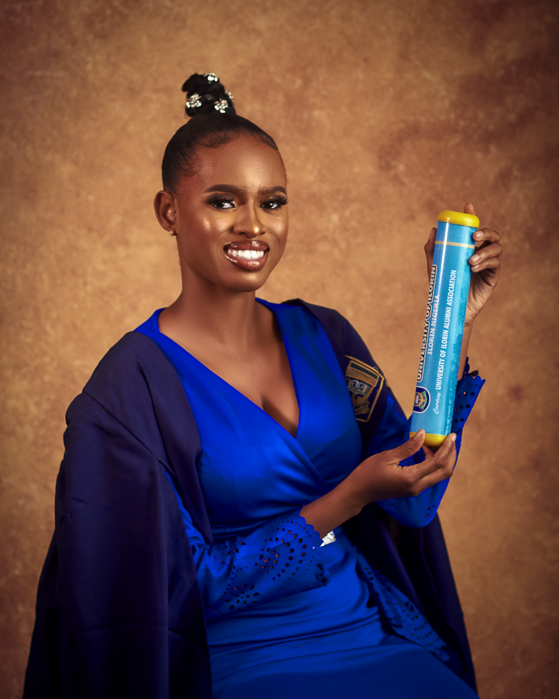
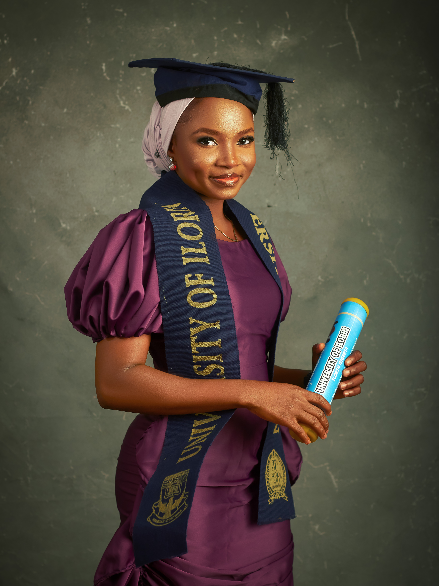
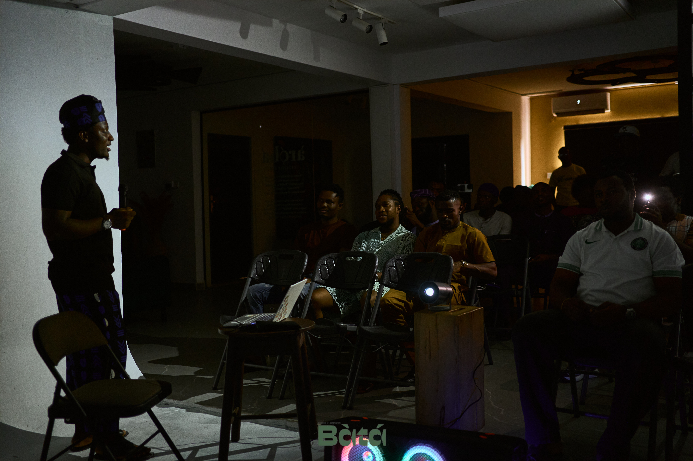
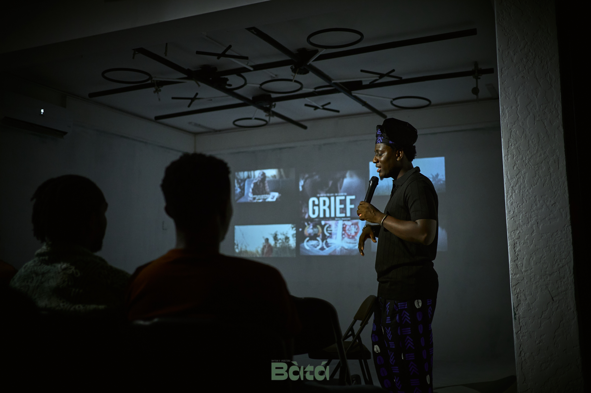
[ EXPEDITIONS // 03 ]
Travel & Visual Narratives
Based in Canada · Creating Everywhere
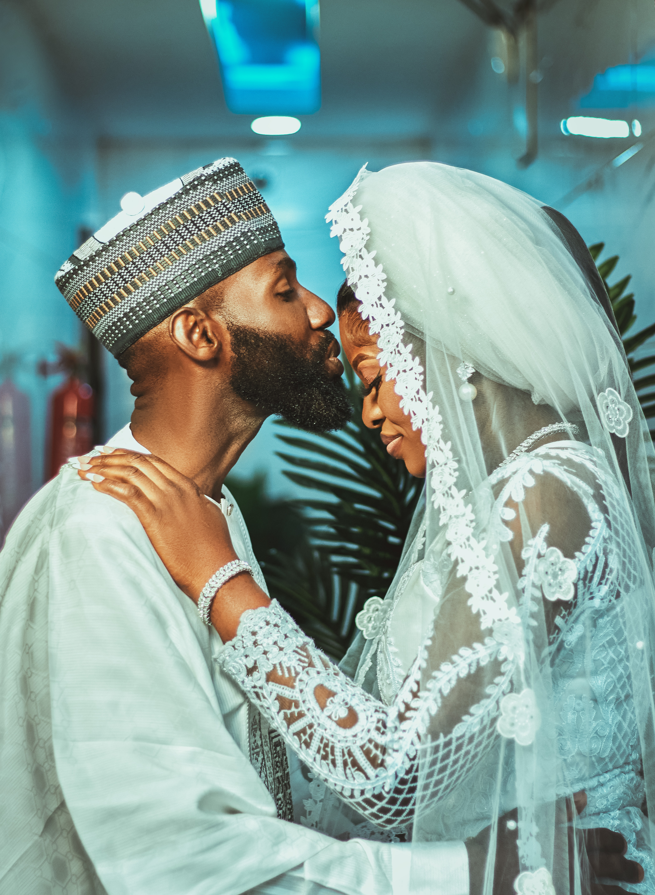
[ BURUNDI ]
Burundi
People. Places. Stories.
An intimate visual exploration capturing authentic community spirit, rolling hills, and rich cultural traditions through cinema and documentary stills.
[ BARBADOS ]
Barbados
Coastal Light & Vibrant Soul.
Immersed in golden Atlantic sunlight, celebrating island culture, spirited gatherings, and breathtaking coastlines framed with high-dynamic range visuals.
[ CANADA ]
Canada
Modern Spaces & Untamed Horizons.
Our creative headquarters. From Toronto's fast-paced cinematic editorial landscape to sweeping northern vistas, capturing moments that define modern Canada.
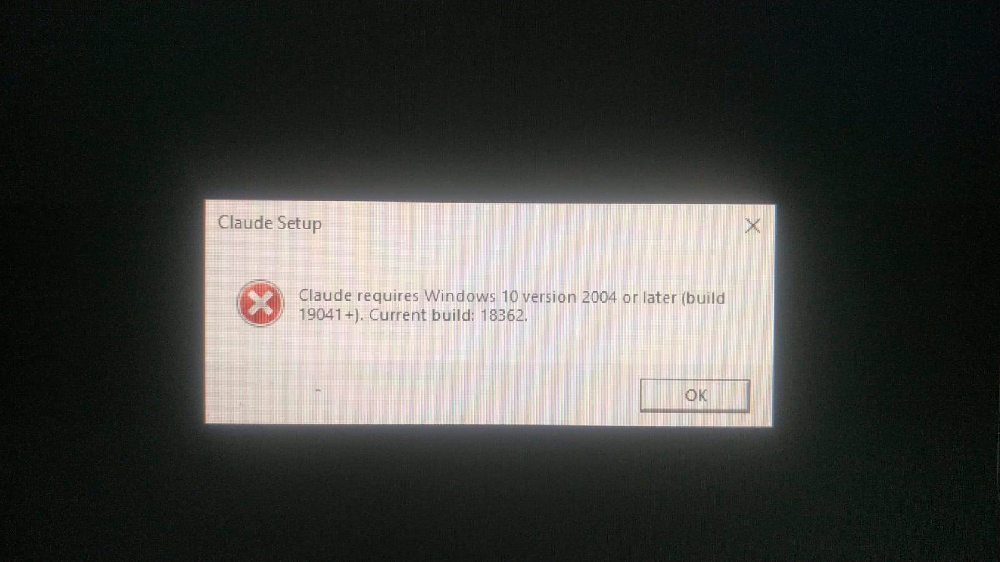
DIR. KOJO ADEJUMO
CANADIAN DP & FILMMAKER
MEET KOJO — THE FILMMAKER BEHIND THE LENS
Collaborate with Kojo
Kojo Adejumo
“Every frame holds a story. My job is to find it, capture it, and make it unforgettable.”
Kojo Adejumo is a Canadian-based filmmaker, cinematographer, and visual director. With an eye trained on emotion, rhythm, and light, Kojo crafts high-end commercials, documentary narratives, cinematic weddings, and milestone photography.
Through KOJOCLICKS, the mission is simple: elevate every subject beyond ordinary capture into a timeless visual experience. Whether working on commercial sets in Toronto, destination wedding productions, or documentary stories across Africa and the Caribbean, Kojo brings intentional direction to every frame.
PRIMARY ROLES
Director / Cinematographer / DP
CORE DISCIPLINES
Commercial, Weddings, Portraits
HEADQUARTERS
Canada (Global Availability)
PRODUCTION FORMAT
4K Cinema / Anamorphic Master
[ PRODUCTION SCOPE // 04 ]
Services & Deliverables
End-to-end creative direction & capture
[ 01 ]
Commercial & Brand Films
Cinematic brand storytelling designed to position companies with authority. High-converting social spots, company profiles, and product launches.
- Creative Concept & Script
- Cinema Camera Package
- Sound Design & Color Grade
[ 02 ]
Cinematic Weddings & Milestones
Feature-length wedding films and highlight reels capturing genuine emotion, laughter, and romance with timeless editorial elegance.
- Full-Day Multi-Cam Coverage
- Drone Aerial Cinematography
- Teaser Reel + 4K Feature Film
[ 03 ]
Editorial & Milestone Photography
Prestigious Convocation / Graduation portraits, executive studio portraits, and lifestyle captures framed with magazine-grade lighting.
- Convocation & Grad Sessions
- High-End Retouching
- Private High-Res Gallery
[ 04 ]
International & Travel Productions
Documentary and destination filmmaking for international organizations, tourism boards, and global productions across Canada and abroad.
- Remote Expedition Gear
- Multicultural Storytelling
- Bespoke Documentary Editing
[ PRAISE // 05 ]
Client Words & Trust
“Kojo didn't just record our wedding—he created an emotional movie that brought our entire family to tears. The cinematic quality and care were beyond what we dreamed of.”
“The commercial content Kojo directed for our campaign transformed how people perceive our brand. Fast, professional, and visually spectacular.”
“My convocation photos were breathtaking. He made me feel completely relaxed and captured the pride and joy of that milestone perfectly.”
INQUIRY // BOOKING
Let's Tell Your Story.
Have an upcoming project, wedding, commercial campaign, or portrait session? Tell us your vision and let's bring it to life with cinematic precision.
Instant Messaging
Chat Directly on WhatsApp
Direct Email
natureuncutt@gmail.com
Studio Location
Based in Canada • Worldwide Travel
KOJOCLICKS.CA — Stories in Motion. Moments in Focus.